User Interface Widgets¶
This section provides the documentation on the code behind DBS Guide.
Contents¶
1. Update Widget (Status Bar)¶
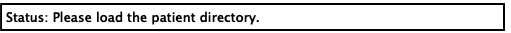Module for progress update
This module informs the user of the latest action that has been performed by the graphic user interface by updating the status bar at the top of the user interface.
-
class
dbsGuideWidgets.wig_13_updateWidget.updateWidget(text)¶ Main updateWidget object
Sets up the status bar with the desired text.
- Parameters
text (String) – Text to be shown as the most recent update.
-
updateStatus(text)¶ Updates the status bar with text
- Parameters
text (String) – Text to be shown as the most recent update.
2. Patient Directory Widget¶
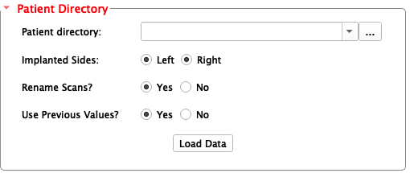Module for defining patient directory.
This module allows the user to define the patient data directory.
-
class
dbsGuideWidgets.wig_01_patientDirectoryWidget.patientDirectoryWidget(parameters)¶ Constructor - Main patientDirectoryWidget object
Initializes the patient directory widget.
- Parameters
parameters (Dictionary) – A dictionary of several important directory paths.
-
onImplantedSidesButtonGroupClicked(button)¶ Slot for
Implanted sidesbutton.- Parameters
button (Macro - Integer) – The number that refers to the button clicked
-
onRenameScansButtonGroupClicked(button)¶ Slot for
Rename Scansbutton.- Parameters
button (Macro - Integer) – The number that refers to the button that’s clicked
-
onUsePreviousValuesClicked(button)¶ Slot for
Use Previous Valuesbutton.- Parameters
button (Macro - Integer) – The number that refers to the button that’s clicked
-
patient_directory_setup()¶ Confiugres patient directory widget’s form.
3. Patient Info Widget¶
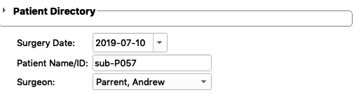Module for providing information about the patient.
This module provides information about the date, the specific patient that is loaded, and the surgeon.
-
class
dbsGuideWidgets.wig_02_patientInfoWidget.patientInfoWidget(parameters)¶ Constructor - Main patientInfoWidget
Initializes the patient info widget.
- Parameters
parameters (Dictionary) – A dictionary of several important directory paths.
-
patient_info_setup()¶ Patient info widget setup.
-
selectedDateChanged()¶ Slot for date widget.
Updates the date widget and writes to file the date that has been selected by the user.
-
updateSurgeonName()¶ Slot for surgeon name widget.
Updates the surgeon name widget and writes to file the surgeon name that has been selected by the user.
4. Frame Detection Widget¶
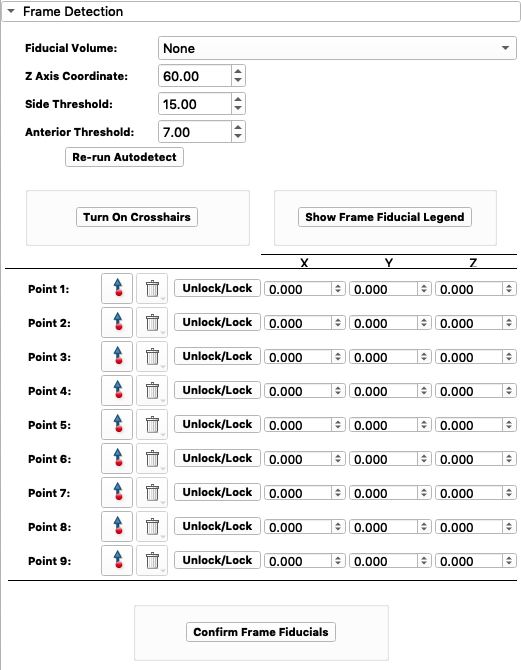Module for detecting the stereotactic frame.
This module allows the user to define the frame fiducials on the CT image.
-
class
dbsGuideWidgets.wig_03_frameDetectionWidget.frameDetectionWidget(parameters)¶ Constructor - Main frameDetectionWidget object
Initializes the frame detection widget.
- Parameters
parameters (Dictionary) – A dictionary of several important directory paths.
-
calc_frame_fids_X(P1, P2, P3)¶ Calculates frame fiducial x-coordinates
- Parameters
P1 (float) – Point 1
P2 (float) – Point 2
P3 (float) – Point 3
- Returns
arrays of the top and bottom fiducials
- Return type
Numpy array
-
calc_frame_fids_Y(P1, P2, P3)¶ Calculates frame fiducial y-coordinates
- Parameters
P1 (float) – Point 1
P2 (float) – Point 2
P3 (float) – Point 3
- Returns
arrays of the top and bottom fiducials
- Return type
Numpy array
-
frame_detect_setup()¶ Setup function for frameDetectionWidget
This function sets up the frame detection widget with all the appropriate forms.
-
getFidCoords(fids)¶ Gets fiucial world coordinates.
Gets the world coordinates of the fiducial by looping through all fiducials in provided markups list node.
- Parameters
fids (vtkMRMLMarkupsFiducialNode) – markups list node
- Returns
fiducial coordinates
- Return type
list array
-
lineModel(scene, point1, point2, name, color)¶ Creates line model between two points
Creates a line model between two points and displays it.
- Parameters
scene (Nodes) – MRML scene
point1 (array) – point 1 of the line
point2 (array) – point 2 of the line
name (String) – name of the line model
color (Tuple) – color of the line model
-
onCrosshairToggleFrameButton()¶ Slot for
Turn On Crosshairsbutton.Toggles crosshairs ON/OFF.
-
onFrameFidButtonGroup(button)¶ Slot for buttons within the frame fiducial button group.
-
onFrameFidConfirmButton()¶ Slot for
Confirm Frame Fiducialsbutton.Saves frame fiducials as 3D Slicer nodes and writes to patient directory as .vtk files. Finally, the frame .vtk files are displayed.
-
onFrameFidVolumeCBox(rerun=False)¶ Slot for
Fiducial Volumebox.Displays the brain scan of the patient corresponding to the fiducial volume selected.
- The list of available volumes:
3D T1 weighted (3D-T1W)
Fast spin echo T2 weighted coronal view (FSEcor_T2w)
Fast spin echo T2 weighted transverse view (FSEtra_T2W)
3D electodes T1 weighted (3DELECTRODE_T1w)
Fast spin echo T2 weighted saggital view (FSEsag_T2w)
CT scan with frame (ctFrame)
-
onP1pointClick(enabled)¶ Slot for Point 1 fiducial placement click.
Locks the point and records its coordinates.
- Parameters
enabled (Boolean) – whether the point has been clicked onto the scan or not
-
onShowFrameLegendButton()¶ Slot for
Show Frame Fiducial Legendbutton.Displays frame fiducial legend.
5. Registration Widget¶
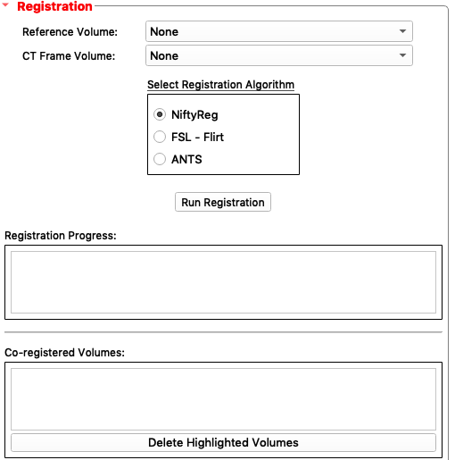Module for running registration of nifti files.
This module runs FSL flirt registration.
-
class
dbsGuideWidgets.wig_04_registrationWidget.registrationWidget(regLogic, parameters)¶ Constructor - Main registrationWidget object
Initializes the registration widget.
- Parameters
regLogic – Registration logic
paramters – A dictionary of several important directory paths.
-
linear_registration_setup()¶ Class setup function for widget.
This function sets up the registration widget.
-
onCTFrameVolCBox()¶ Slot for
CT Frame Volume:combo box
-
onDeleteVolume()¶ Slot for
Delete Highlighted Volumesbutton
-
onReferenceVolCBox()¶ Slot for
Reference Volume:combo box
-
onRunRegistrationButton()¶ Slot for
Run Registrationbutton
6. Anatomical Fiducials Widget¶
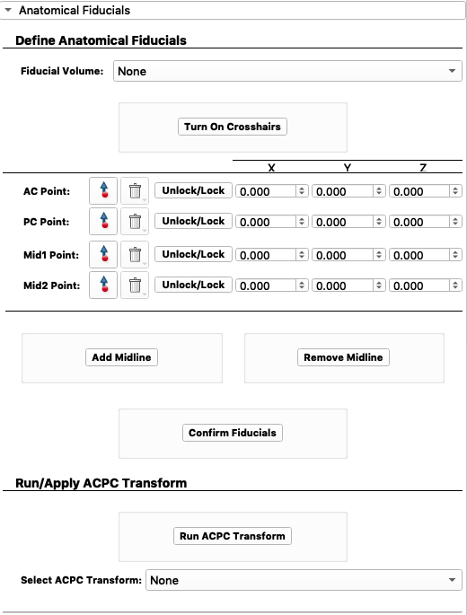Module for placing anatomical fiducials.
This module allows the user to define several anatomical fiducial points. These points include AC, PC, and midline points.
-
class
dbsGuideWidgets.wig_05_anatomicalFiducialsWidget.anatomicalFiducialsWidget(parameters)¶ Constructor - Main anatomicalFiducialsWidget object
Initializes the Anatomical Fiducials widget.
- Parameters
paramters – A dictionary of several important directory paths.
-
acpc_point_setup()¶ Sets up the*
Anatomical Fiducialswidget.
-
getFidCoords(fids)¶ Gets the coordinates for fiducials.
- Parameters
fids (array) – fiducials to get coordinates for
- Return rasCoord
The coordinates
-
onACPCTransformCBox()¶ Slot for
Select Transform:combo box
-
onACPointClick(enabled)¶ Slot for AC point clicked.
- Parameters
enabled (boolean) – if the AC point is clicked
-
onAcpcTransformButton()¶ Slot for
Run ACPC Transformbutton
-
onAddMidlineButton()¶ Slot for
Add Midlinebutton.
-
onCrosshairToggleButton()¶ Slot for
Turn On Crosshairsbutton.
-
onFidConfirmButton()¶ Slot for
Confirm Fiducialsbutton.
-
onFidVolumeCBox()¶ Slot for
Fiducial Volume:combo box.
-
onMid1PointClick(enabled)¶ Slot for Mid1 point clicked.
- Parameters
enabled (boolean) – if the Mid1 point is clicked
-
onMid2PointClick(enabled)¶ Slot for Mid2 point clicked.
- Parameters
enabled (boolean) – if the Mid2 point is clicked
-
onMidlineFidButtonGroup(button)¶ Slots for buttons in the midline fiducial button group :param button: button that was clicked :type button: Integer
-
onPCPointClick(enabled)¶ Slot for PC point clicked.
- Parameters
enabled (boolean) – if the PC point is clicked
-
onRemoveMidlineButton()¶ Slot for
Remove Midlinebutton.
7. Target Planning Widget¶
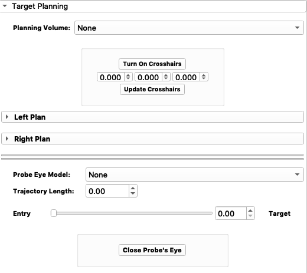Module for target planning.
This module provides target planning capabilities for the surgeon.
-
class
dbsGuideWidgets.wig_06_targetPlanningWidget.targetPlanningWidget(parameters)¶ Constructor - Main targetPlanningWidget object
Initiates the targetPlanningWidget
- Parameters
paramters – A dictionary of several important directory paths.
-
get_model_point(node)¶ Gets model point. :param node: the node for which the model point is requested :return point_Ras: the model point
-
norm_vec(P1, P2)¶ Creates a normal vector between two points. :param P1: Point 1 :type P1: Array - coordinates
- Parameters
P2 (Array - coordinates) – Point 2
- Return NormVec
The normal vector
-
onCrosshairTogglePlanningButton()¶ Slot for
Turn On Crosshairsbutton
-
onFrameSliderValueChanged(newValue)¶ Slot for
EntrytoTargetslider- Parameters
newValue (Integer) – the new value tha the slider is set to
-
onLeftButtonGroupClicked(button)¶ Slot for
Left Plan - Plot Planned Leadbutton group.- Parameters
button (Integer) – id of the button clicked
-
onLeftElecModelButtonGroup()¶ Slot for electrode type in
Left Plan - Electrode:
-
onLeftEntryCoordConfirmButton()¶ Slot for confirming left entry coordinates
-
onLeftEntryJumpButton()¶ Slot for
Jump to...button underLeft Plan - Entry:
-
onLeftEntryMoveButton()¶ Slot for when the
Left Plan - Entry buttonis moved.
-
onLeftEntryPointClick(enabled)¶ Slot for
Left Plan - Entry:point button clicked- Parameters
enabled (Boolean) – status of button enabled
-
onLeftMERTracksButton(button)¶ Slot for
Left Plan - Plot MER Tracksbutton group.- Parameters
button (Integer) – id of the button clicked
-
onLeftTargetCoordConfirmButton()¶ Slot for
Confirm Left Planbutton underLeft Plan
-
onLeftTargetJumpButton()¶ Slot for
Jump to...button underLeft Plan - Target:
-
onLeftTargetMoveButton()¶ Slot for when the
Left Plan - Target buttonis moved.
-
onLeftTargetPlanningExpand(collapsed)¶ Slot for when
Left Plancollapsible button is expanded.- Parameters
collapsed (Boolean) – the state of the button (collapsed or not)
-
onLeftTargetPointClick(enabled)¶ Slot for
Left Plan - Target:point button clicked- Parameters
enabled (Boolean) – status of button enabled
-
onMouseMovedPlanning(observer, eventid)¶ Slot for when the the cross hair node has been relocated. :param observer: observer :param eventid: event ID
-
onPlannedPreopConfirmButton(button)¶ Slot for Planned Preop Confirm button
- Parameters
button (Integer) – ID of button
-
onPlanningVolumeCBox()¶ Slot for
Planning Volumecombo box.
-
onProbeEyeCBox()¶ Slot for
Probe Eye Modelcombo box.
-
onProbeEyeClose()¶ Slot for
Close Probe's Eyebutton.
-
onRightButtonGroupClicked(button)¶ Slot for
Right Plan - Plot Planned Leadbutton group.- Parameters
button (Integer) – id of the button clicked
-
onRightElecModelButtonGroup()¶ Slot for electrode type in
Right Plan - Electrode:
-
onRightEntryCoordConfirmButton()¶ Slot for confirming right entry coordinates
-
onRightEntryJumpButton()¶ Slot for
Jump to...button underRight Plan - Entry:
-
onRightEntryMoveButton()¶ Slot for when the
Right Plan - Entry buttonis moved.
-
onRightEntryPointClick(enabled)¶ Slot for
Right Plan - Entry:point button clicked- Parameters
enabled (Boolean) – status of button enabled
-
onRightMERTracksButton(button)¶ Slot for
Right Plan - Plot MER Tracksbutton group.- Parameters
button (Integer) – id of the button clicked
-
onRightTargetCoordConfirmButton()¶ Slot for
Confirm Left Planbutton underLeft Plan
-
onRightTargetJumpButton()¶ Slot for
Jump to...button underRight Plan - Target:
-
onRightTargetMoveButton()¶ Slot for when the
Right Plan - Target buttonis moved.
-
onRightTargetPlanningExpand(collapsed)¶ Slot for when
Right Plancollapsible button is expanded.- Parameters
collapsed (Boolean) – the state of the button (collapsed or not)
-
onRightTargetPointClick(enabled)¶ Slot for
Right Plan - Target:point button clicked- Parameters
enabled (Boolean) – status of button enabled
-
onSelectAllLeftMERClicked(button)¶ Slot for
Allbutton inLeft Plan - MER Tracks- Parameters
button (Boolean) – status of button being clicked
-
onSelectAllRightMERClicked(button)¶ Slot for
Allbutton inRight Plan - MER Tracks- Parameters
button (Boolean) – status of button being clicked
-
onUpdateCrosshairPlanning()¶ Slot for
Update Crosshairsbutton
-
reslice_on_path(p0, pN, orientation=0)¶ Modifies the slice node to be resliced on a specific path
- Parameters
p0 (array - coordinates) – point 0
pN (array - coordinates) – point N
orientation (Integer) – the orientation, default set to 0
-
target_planning_setup()¶ Sets up the
Target Planningwidget.
8. Intraoperative Planning Widget¶
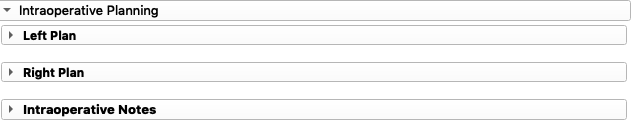Module for intraoperative planning.
This module provides manipulation of the pre-operative plan during the operation.
-
class
dbsGuideWidgets.wig_07_intraopPlanningWidget.intraopPlanningWidget(parameters)¶ Constructor - Main intraopPlanningWidget object
Initializes the
Intraoperative Planningwidget.-
intraop_planning_setup()¶ Sets up the intraoperative planning widget.
-
onLeftButtonGroupIntraopClicked(button)¶ Slot for selection of
Plot Planned LeadunderLeft Plan- Parameters
button (Integer) – id of button clicked
-
onLeftIntraopPlanningExpand(collapsed)¶ Slot for
Left Plancollapsible button.- Parameters
collapsed (Boolean) – status of button - expanded/collapsed
-
onLeftMERTracksIntraopButton(button)¶ Slot for selection of
Plot MER TracksunderLeft Plan- Parameters
button (Integer) – id of button clicked
-
onLeftTrajUsedButtonGroup()¶ Slot for selection of
Trajectory usedunderLeft Plan
-
onNotesWidgetExpand(collapsed)¶ Slot for
Intraoperative Notescollapsible button.- Parameters
collapsed (Boolean) – status of button - expanded/collapsed
-
onRightButtonGroupIntraopClicked(button)¶ Slot for selection of
Plot Planned LeadunderRight Plan- Parameters
button (Integer) – id of button clicked
-
onRightIntraopPlanningExpand(collapsed)¶ Slot for
Right Plancollapsible button.- Parameters
collapsed (Boolean) – status of button - expanded/collapsed
-
onRightMERTracksIntraopButton(button)¶ Slot for selection of
Plot MER TracksunderRight Plan- Parameters
button (Integer) – id of button clicked
-
onRightTrajUsedButtonGroup()¶ Slot for selection of
Trajectory usedunderRight Plan
-
onUpdatePlannedLeads(button)¶ Slot for
Update Planbuttons- Parameters
button (Integer) – id of button clicked -2 for left, -3 for right
-
9. Microelectrode Recordings Widget¶
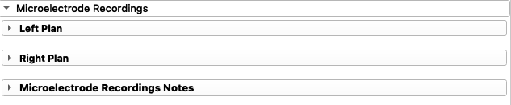Module for intraoperative microelectrode recordings.
This module allows input of recordings depths of the target nucleus using intraoperaive microelectrode recordings.
-
class
dbsGuideWidgets.wig_08_intraopMicroelectrodeWidget.intraopMicroelectrodeWidget(parameters)¶ -
intraop_microelectrode_setup()¶ Sets up the intraoperative microelectrode recordings widget display configuration.
-
onIntraopMERConfirmButton(button)¶ Slot for
Confirm MERbutton.- Parameters
button (Integer) – id of button clicked
-
onLeftMERActivityPlotClicked(button)¶ Slot for selection of
Plot MER TracksunderLeft Plan- Parameters
button (Integer) – id of button clicked
-
onLeftMicroelectrodeExpand(collapsed)¶ Slot for
Left Plancollapsible button.- Parameters
collapsed (Boolean) – status of button - expanded/collapsed
-
onLeftTrajNoMERButton(button)¶ Slot for trajectory used under
Left Plan- Parameters
button (Integer) – id of button clicked
-
onNotesWidgetExpand(collapsed)¶ Slot for
Microelctrode Recordings Notescollapsible button.- Parameters
collapsed (Boolean) – status of button - expanded/collapsed
-
onRightMERActivityPlotClicked(button)¶ Slot for selection of
Plot MER TracksunderRight Plan- Parameters
button (Integer) – id of button clicked
-
onRightMicroelectrodeExpand(collapsed)¶ Slot for
Right Plancollapsible button.- Parameters
collapsed (Boolean) – status of button - expanded/collapsed
-
onRightTrajNoMERButton(button)¶ Slot for trajectory used under
Right Plan- Parameters
button (Integer) – id of button clicked
-
10. Postoperative Info Widget¶
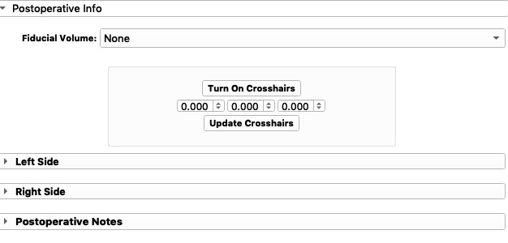Module for post-operative electrode localization.
This module allows the user to define the location of the implanted electrodes using post-operative images (CT or MRI).
-
class
dbsGuideWidgets.wig_09_postopElectrodeWidget.postopElectrodeWidget(parameters)¶ -
onActualElecPlotButton(button)¶ Slot for
Update Activitybutton- Parameters
button (Integer) – id of the button clicked (left/right side)
-
onCrosshairTogglePostButton()¶ Slot for
Turn On Crosshairsbutton
-
onElecLBpointClick(enabled)¶ Slot for
Elect Bot:point button clicked underLeft Plan- Parameters
enabled (Boolean) – status of button enabled
-
onElecLTpointClick(enabled)¶ Slot for
Elect Top:point button clicked underLeft Plan- Parameters
enabled (Boolean) – status of button enabled
-
onElecRBpointClick(enabled)¶ Slot for
Elect bot:point button clicked underRight Plan- Parameters
enabled (Boolean) – status of button enabled
-
onElecRTpointClick(enabled)¶ Slot for
Elect Top:point button clicked underRight Plan- Parameters
enabled (Boolean) – status of button enabled
-
onElectrodeFidButton(button)¶ Slot for Electrode fiducial buttons
- Parameters
button (Integer) – button ID
-
onFidVolumeElecBox()¶ Slot for
Fiducial Volume:combo box
-
onLeftActualElecButtonGroupClicked(button)¶ Slot for
Plot Actual Lead:button group underLeft Plan- Parameters
button (Integer) – id of the button clicked
-
onLeftActualElectrodeExpand(collapsed)¶ Slot for
Left Sidecollapsible button.- Parameters
collapsed (Boolean) – status of button - expanded/collapsed
-
onLeftActualMERTracksButtonGroupClicked(button)¶ Slot for
Plot MER Tracks:button group underLeft Plan- Parameters
button (Integer) – id of the button clicked
-
onMouseMovedPost(observer, eventid)¶ Slot for when the the cross hair node has been relocated. :param observer: observer :param eventid: event ID
-
onNotesWidgetExpand(collapsed)¶ Slot for
Postoperative Notescollapsible button.- Parameters
collapsed (Boolean) – status of button - expanded/collapsed
-
onPostopMERConfirmButton(button)¶ Slot for
Confirm Electrodebutton- Parameters
button (Integer) – id of the button clicked (right or left side)
-
onRightActualElecButtonGroupClicked(button)¶ Slot for
Plot Actual Lead:button group underRight Plan- Parameters
button (Integer) – id of the button clicked
-
onRightActualElectrodeExpand(collapsed)¶ Slot for
Right Sidecollapsible button.- Parameters
collapsed (Boolean) – status of button - expanded/collapsed
-
onRightActualMERTracksButtonGroupClicked(button)¶ Slot for
Plot MER Tracks:button group underRight Plan- Parameters
button (Integer) – id of the button clicked
-
onUpdateCrosshairPost()¶ Slot for
Update Crosshairsbutton
-
postop_setup()¶ Sets up the
Postoperative Infowidget display configuration.
-
11. Postoperative Programming Widget¶
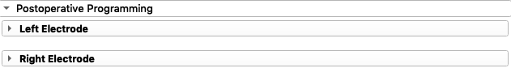Module for Postoperative Programming widget.
This module is used to program the visualization postoperative.
-
class
dbsGuideWidgets.wig_11_postopProgrammingWidget.postopProgrammingWidget(parameters)¶ Constructor - Main dataVisualizationWidget object
Initiates the
Data Viewwidget- Parameters
dataVisibility – Data visibility
paramters – A dictionary of several important directory paths.
-
onLeftElecModelButtonGroup()¶ Slot for button group belonging to
Electrode:underLeft Electrode
-
onLeftElecNumberButtonGroup(button)¶ Slot for button group belonging to
Channel:underLeft Electrode
-
onLeftPostopProgrammingExpand(collapsed)¶ Slot for
Left Electrodecollapsible button.- Parameters
collapsed (Boolean) – status of button - expanded/collapsed
-
onLeftShowElectrodeDiagramButton()¶ Slot for
Electrode Diagrambutton belonging toLeft Electrode
-
onRightElecModelButtonGroup()¶ Slot for button group belonging to
Electrode:underRight Electrode
-
onRightElecNumberButtonGroup(button)¶ Slot for button group belonging to
Channel:underRight Electrode
-
onRightPostopProgrammingExpand(collapsed)¶ Slot for
Right Electrodecollapsible button.- Parameters
collapsed (Boolean) – status of button - expanded/collapsed
-
onRightShowElectrodeDiagramButton()¶ Slot for
Electrode Diagrambutton belonging toRight Electrode
-
postop_programming_setup()¶ Sets up the postoperative planning widget.
12. Data View Widget¶
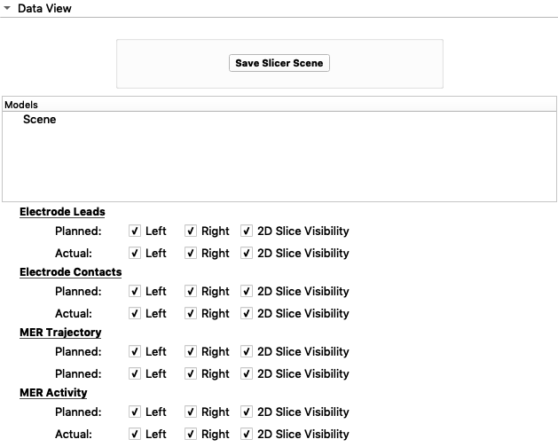Module for manipulating what data models are shown.
This module provides the user the capability of turning model data OFF/ON within the 3D view and slice view.
-
class
dbsGuideWidgets.wig_10_dataVisualizationWidget.dataVisualizationWidget(dataVisibility, parameters)¶ Constructor - Main dataVisualizationWidget object
Initiates the
Data Viewwidget- Parameters
dataVisibility – Data visibility
paramters – A dictionary of several important directory paths.
-
data_view_setup()¶ Sets up the
Data Viewwidget display configuration
-
hex2rgb(hx)¶ Changes colour mode from HEX to RGB
- Parameters
color (string) – color in RGB
- Return rgb
the RGB equivalent of the given HEX
- Return type
Tuple
-
onActualContactButtonGroupClicked(button)¶ Slot for button group belonging to
Electrode Contacts - Actual:- Parameters
button (Integer) – ID of the button selected
-
onActualContactColorChange(color)¶ Slot for change in colour of
Electrode Contacts - Actual:- Parameters
color – the new color that was selected
-
onActualLeadButtonGroupClicked(button)¶ Slot for button group belonging to
Electrode Leads - Actual:- Parameters
button (Integer) – ID of the button selected
-
onActualLeadColorChange(color)¶ Slot for change in colour of
Electrode Leads - Actual:- Parameters
color – the new color that was selected
-
onActualMERActivityColorChange(color)¶ Slot for change in colour of
MER Activity - Actual:- Parameters
color – the new color that was selected
-
onActualMERSTNButtonGroupClicked(button)¶ Slot for button group belonging to
MER Activity - Planned:- Parameters
button (Integer) – ID of the button selected
-
onActualMERTrackColorChange(color)¶ Slot for change in colour of
MER Trajectory - Actual:- Parameters
color – the new color that was selected
-
onActualMERTracksButtonGroupClicked(button)¶ Slot for button group belonging to
MER Trajectory - Actual:- Parameters
button (Integer) – ID of the button selected
-
onPlannedContactButtonGroupClicked(button)¶ Slot for button group belonging to
Electrode Contacts - Planned:- Parameters
button (Integer) – ID of the button selected
-
onPlannedContactColorChange(color)¶ Slot for change in colour of
Electrode Contacts - Planned:- Parameters
color – the new color that was selected
-
onPlannedLeadButtonGroupClicked(button)¶ Slot for button group belonging to
Electrode Leads - Planned:- Parameters
button (Integer) – ID of the button selected
-
onPlannedLeadColorChange(color)¶ Slot for change in colour of
Electrode Leads - Planned:- Parameters
color – the new color that was selected
-
onPlannedMERActivityColorChange(color)¶ Slot for change in colour of
MER Activity - Planned:- Parameters
color – the new color that was selected
-
onPlannedMERSTNButtonGroupClicked(button)¶ Slot for button group belonging to
MER Activity - Planned:- Parameters
button (Integer) – ID of the button selected
-
onPlannedMERTrackColorChange(color)¶ Slot for change in colour of
MER Trajectory - Planned:- Parameters
color – the new color that was selected
-
onPlannedMERTracksButtonGroupClicked(button)¶ Slot for button group belonging to
MER Trajectory - Planned:- Parameters
button (Integer) – ID of the button selected
-
onSaveSceneButton()¶ Slot for
Save Slicer Scenebutton.
-
rgbToHex(color)¶ Changes colour mode from RGB to HEX
- Parameters
color (tuple) – color in RGB
- Return rgb2hex
the HEX equivalent of the given RGB
- Return type
String
13. Notes Widget¶
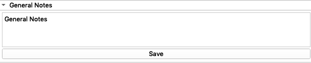Module for notes box
This module creates a notes box for the user interface and saves any typed notes to the patient data directory as a .txt file.
-
class
dbsGuideWidgets.wig_12_notesWidget.notesWidget(parameters, plainText, title, extension)¶ Main NotesWidget object. Initializes the notes box with the desired title of the notes in the notes box. The notes box is closed/collapsed by default. If the user needs to enter notes, the user can expand the notes box and start typing.
- Parameters
parameters (Dictionary) – A dictionary of several important directory paths.`
plainText – Text to be included inside text box by defualt.
title (String) – Title of notes box collapsible button
extension (String) – Text for file to be saved as.
-
notes_setup()¶ Sets up the notes widget
Connects the ‘save button’ with onSaveNotesButton.
-
onSaveNotesButton(button)¶ Slot for save button
Saves notes once
Savebutton is clicked.- Parameters
button (Boolean) – The status of the button.